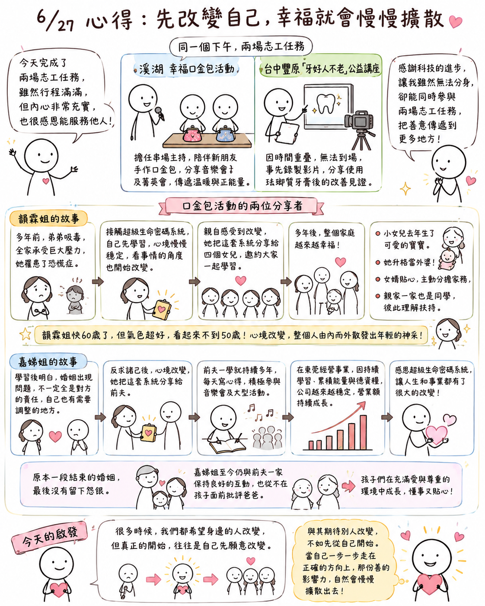

日期：2026/06/27

今天完成了兩場志工任務，雖然一整天下來行程滿滿，但內心卻覺得非常充實，也很感恩自己有機會透過不同的方式參與志工活動、服務他人。
下午先到溪湖參與幸福口金包活動，擔任串場主持，也陪伴新朋友一起完成口金包手作，並在互動過程中分享音樂會及菁英會，希望把這份溫暖與正能量分享給更多人。
同一時間，台中豐原也舉辦了「牙好人不老」的公益講座。因為時間重疊，無法親自到場，主辦單位便請我事先錄製影片，分享自己使用琺瑯質牙膏後牙齒改善的見證。
想到同一個下午，我人在溪湖服務，另一邊卻透過影片在豐原和大家分享，真的很感謝科技的進步，讓自己雖然無法分身，卻能同時參與兩場志工任務，也讓我體會到，只要善用科技，就能讓一份善意傳遞到更多地方。
口金包活動，今天兩位分享者的故事，也讓我收穫很多。
第一次聽到韻霖姐分享，她提到，多年前因為弟弟吸毒，全家人都承受著很大的壓力，她自己更因為長期擔心弟弟，最後罹患了恐慌症。就在那段人生低潮中，她接觸到了超級生命密碼系統。一開始是她自己先學習，也因為持續學習，心境慢慢穩定下來，看事情的角度也開始改變。正因為親自感受到這份改變，她便把超級生命密碼系統分享給四個女兒，邀約孩子們也能一起學習。
多年後，她看見的不貞是自己改變，而是整個家庭都慢慢變得更加幸福。最小的女兒去年迎來了可愛的寶寶。她也升格當外婆，而且女婿十分貼心，願意主動分擔家務，而親家一家也都是一起學習超級生命密碼系統的同學們，讓她深深感受到，同樣擁有正知正見的家庭，更容易彼此理解、彼此扶持。
更讓大家驚訝的是，韻霖姐已經快六十歲了，但整個人的精神、氣色都非常好，看起來就像不到五十歲。看著她臉上的笑容，我也深深感受到，一個人的心境改變了，那份由內而外散發出的神采，真的會讓人看起來更加年輕。
另一位分享者嘉娣姐，雖然故事我聽過很多次，但每一次都還是很感動。她分享，學習超級生命密碼之後，她才慢慢明白，一段婚姻出了問題，不一定全是對方的責任，自己也有需要調整的地方。當開始反求諸己，不再只是責怪對方時，自己的心境也開始慢慢改變。
因為自己受益，她也把超級生命密碼系統分享給前夫。令她意想不到的是，前夫學習之後，不但持續多年每天寫心得，還積極參與音樂會及各項大型活動。我之前也曾聽過她的前夫分享，他提到自己在東莞經營事業，因為持續學習、累積能量與德資糧，公司的經營越來越穩定，營業額也持續成長。他始終抱著感恩的心，感謝自己有機會接觸這套系統，讓人生和事業都有了很大的改變。
真正讓我佩服的，不只是他們各自的成長，而是原本一段已經結束的婚姻，最後沒有留下怨恨。嘉娣姐至今仍與前夫一家保持良好的互動，也從不在孩子面前批評爸爸，讓孩子能在充滿愛與尊重的環境中成長。我想，這樣的胸襟，真的不是一件容易做到的事。
今天兩位分享者，雖然人生故事不同，卻讓我看見相同的答案。很多時候，我們都希望身邊的人改變，但真正的開始，往往是自己先願意改變。當自己的心境提升了，不只自己的人生會改變，也會慢慢影響家庭、影響孩子，甚至影響原本已經漸行漸遠的人。
今天的分享，也再次提醒我，與其期待別人改變，不如先從自己開始。當自己一步一步走在正確的方向上，那份善的影響力，自然會慢慢擴散出去。